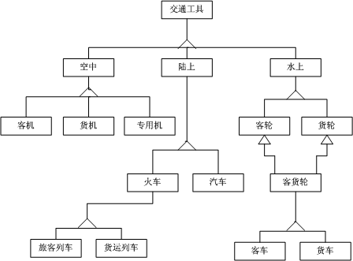

模拟试卷1
（一）名词解释(3％×5＝15％)
1. 软件
软件是计算机系统运行的指令、数据和资料的集合，包括指令程序、数据、相关文档和完善的售后服务的完整集合。即软件=程序 + 数据 + 文档 + 服务。其中，程序是按事先按照预定功能性能等要求设计和编写的指令序列；数据是使程序正常处理信息的数据结构及信息表示；文档是与程序开发、维护和使用有关的技术数据和图文资料。
2. 数据流图
数据流图是一种图形化的系统模型，在一张图中按照系统的观点，将新系统建模为输人、处理、输出和数据存储。它运用图形方式描述系统内部的数据流程，形象、准确地表达了系统的各处理环节以及各环节之间的数据联系，是结构化分析方法的主要表达工具。
3. 耦合
是对软件结构内不同模块之间互连程度的度量，是影响软件复杂程度的一个重要因素。模块间的耦合程度将影响系统的可理解性、可测试性、可靠性和可维护性。在软件设计中应尽可能松散耦合性，便于研究、测试或维护模块，而无须对其他模块了解太多。
4. 对象
面向对象的软件系统由对象组成，复杂的对象由简单的对象组合而成。
对象具有三要素：对象标识、属性和服务。对象的名字称为对象标识；描述对象的静态特征是属性也称状态或数据；描述对象的动态特征是服务也称操作、行为或方法等。
5. 软件配置管理
软件配置管理(SCM)是对产品进行标志、存储和控制，以维护其完整性、可追溯性及正确性而为软件开发提供的一套管理办法和活动原则。
（二）填空题（2％×20＝40％）
1. 软件工程三要素包括： 、 和软件工程过程。
答：软件工程方法、软件工具、软件工程过程
2. 对每个拟研发项目需要从5个方面进行分析： 、 、 、开发方案可行性分析和运行可行性分析
答：技术可行性分析，经济可行性分析，社会可行性分析
3. 结构化方法的基本原则是 。
答：抽象与分解
4. 面向对象的软件工程中经常使用用例，用例实际上是从使用者的角度来确定系统的功能，描述系统用户（也称使用者）对于系统的使用情况。用例之间通常有 和 两种关系。
答：使用，扩展
5. 增殖式集成也称为渐增式集成，包括以下3种方式 ， 和 。
答：自顶向下增殖测试，自底向上增殖测试，混合方式增殖测试
6. 软件项目团队的组织有三种组织结构模式，分别是： ，
和 。
答：按课题划分的模式，按职能划分的模式，矩阵形模式
7. IBM Rational软件工程体系是现代软件工程发展的一个经典案例，其主要特征之一是将理论、技术、方法和工具大范围的集成。主要因 和
而知名，并具有较完善的软件工具集。
答：统一建模语言（UML），统一过程（RUP）
8. 常用的几种黑盒测试技术方法为： 和 。
答：等价分类法，边界值分析法
9. 调试工作由两部分组成，分别是 和 。
答：定位，纠错
（三）选择题（1％×10＝10％）
1. 技术可行性要解决（ D ）。
A. 是否存在侵权的问题 B. 成本-效益问题
C. 运行方式可行的问题 D. 技术风险问题
2. 软件质量必须从（ B ），在整个开发过程中加以保证。
A. 可行性研究 B. 需求分析
C. 总体设计 D. 详细设计
3. SA方法的基本思想是（ C ）。
A. 自底向上逐步抽象 B. 自底向上逐步分解
C. 自顶向下逐步分解 D. 自顶向下逐步抽象
4. 详细设计的任务是确定每个模块的（ B ）。
A． 外部特性 B. 算法和数据结构
C． 功能 D. 原型结构
5. 面向对象分析阶段建立的三个模型中，最先建立，作为另两种模型基本框架的是( C )。
A. 功能模型 B. 动态模型
C. 对象模型 D. 分析模型
6. 下列说法中错误的是( B )。
A. 中间版本是软件未完成前的版本
B. α版本是可以提交严格测试的软件版本
C. β版本是提交给测试人员进行全面测试的软件版本
D. 发布版本是正式向社会发布或向用户提交使用的软件版本
7. 现有一个计算类型的程序，它的输入只有一个Y，其范围是—50≤Y≤50。现从输入的角度考虑设计了一组测试用例：—100，100，0。设计这组测试用例的方法是( B )。
A.条件覆盖法 B.等价分类法
C.边缘值分析法 D.错误推测法
8. 下列图示不可用于图形化的表达软件项目任务安排的是（ D ）
A.甘特图 B.横道图
C.网络图 D.因果图
9. 以下哪一项不是软件危机的表现形式( C )。
A. 开发的软件不满足用户需要 B. 开发的软件可维护性差
C. 开发的软件价格便宜 D. 开发的软件可靠性差
10. UML构造模型的基本手段是( A )。
A. 抽象 B. 细化
C. 验证 D. 继承
（四）简答题（25%）
1． 为什么要进行可行性分析？可行性分析的结论有几种？
答：可行性分析也称可行性研究，其目的是围绕影响软件项目研发的各种因素的可行性进行全面、系统的分析论证。主要是以尽可能小的成本在较短时间和特定条件下确定软件项目是否值得研发，是否可行；分析在当前条件下，开发新软件项目具备必要的资源和其他条件情况，关键问题和技术难点，以及问题能否得到解决，技术路线和方法等。
可行性分析的结论，概括起来有3种情况：
（1）可行。“可行”结论表明可以按初步方案和计划进行立项并开发。
（2）基本可行。对软件项目内容或方案进行必要修改后，可以进行开发。
（3）不可行。软件项目不能进行立项或确定项目终止。
2． 总体设计的原则有哪些?
答：总体设计的总原则及过程是：由宏观到微观、逐步求精的原则，定性定量分析相结合、分解与协调相结合和模型化方法，并要兼顾系统的一般性、关联性、整体性和层次性。根据系统的总体结构、功能、任务和目标的要求分解系统，使各子系统之间互相协调配合，实现系统的整体优化。主要体现为软件工程的模块化、抽象、信息隐藏等基本原则。
3． 用户界面应具备的特性有什么？用户界面设计的原则是什么？
答：界面设计应考虑以下3个特性：
（1）可使用性。
（2）灵活性。
（3）界面的复杂性与可靠性。
通常，用户界面设计应遵循以下4项基本原则：
（1）界面的合适性。
（2）简便易操作。
（3）便于交互控制。
（4）媒体组合恰当。
4． 简述瀑布模型的阶段划分和各阶段的主要任务以及瀑布模型存在的问题。
瀑布模型的阶段划分和各阶段的任务为：
(1) 需求分析和定义
根据系统的使用者（需方）需求进行具体分析，制定系统应完成的功能、目标、各项服务和限制，确定工作范围和所花费的代价。并且以用户和软件开发人员都能理解的形式加以定义和明确。
(2) 系统和软件设计
先把用户的需求分成硬件需求和软件需求，在此基础上确定整个系统的结构。在软件设计中，进一步把用户的要求和系统的目标在软件系统的各项功能中表现出来，并分别使之达到能够进行程序设计的程度。
(3) 编程和单元测试
在这个阶段中，软件的设计已经以程序集合或单元程序的形式完成，并包含了验证各个单元程序是否满足式样要求的单元测试。
(4) 综合测试和系统测试
把各个单元程序和程序组结合起来，作为一个完整的系统进行测试。在这种测试中，一方面要发现和排除系统或程序中的错误，更重要的是要确认已完成的系统是否满足用户和设计者的要求。测试后，把这个软件提供给用户。
(5) 运行和维护
运行和维护是软件生存期中需要时间较长的一个阶段，在这一阶段，系统被实际装入并实际应用，那些在软件开发初期没有被发现的错误，或者是用户提出新的要求，都需要在这一阶段加以解决。
瀑布模型的问题之一是对软件工程中的反复性质认识不足，另外还有一个缺点是在开发工程的初期，就必须把规格式样确定下来，而在有些情况下，由于用户的需求不明确，某些规格式样开始是不太好确定的。软件工程是复杂的、多变的工程，用单纯的线性模型很难完全表示出来。
（五）应用题（10％）
交通工具分为空中、陆上、水上交通工具，空中交通工具分为客机、货机、专用轻型机；陆上交通工具分为火车、汽车，火车和汽车又分客车、货车，水上交通工具有轮船，轮船分为客轮、货轮、客货混合轮。建立交通工具的对象模型。

模拟试卷2
（一）名词解释(3％×5＝15％)
1. 软件危机
软件危机是指在计算机软件开发、运行、维护和管理过程中所遇到的一系列严重问题。软件危机主要包含两方面的问题： 一是开发的软件如何满足社会对软件日益增长的各种需求，二是怎样维护和管理不断快速增长的已有软件。
2. 数据字典
数据字典数据词典是对数据流图中所包含各种元素定义的集合。包括对数据流、数据项、文件及基本加工4类条目描述。它以一种准确无二义性的说明方式为软件分析、设计及维护提供了有关数据元素一致的定义和详细描述。
3. 模块化
模块化是将复杂软件划分为功能相对独立且易于处理的模块的过程，软件的层次结构正是模块化的具体体现。
4. 继承
继承是父类和子类之间共享数据结构和方法的一种机制，是以现存的定义的内容为基础，建立新定义内容的技术,是类之间的一种关系。
继承有两种：单重继承、多重继承。继承性通常表示父类与子类的关系。
5. 软件复用
软件复用(Software Reuse)是指在软件研发中重复利用相关软件元素的过程。是避免重复工作将已有的软件模块、技术和方法等用于建立新软件，以减少软件开发和维护等费用的过程。软件复用是提高软件研发效率和质量的一种重要技术。
（二）填空题（2％×20＝40％）
1. 目前常用的软件工程方法可以分为七种类型： 、 、 、面向问题方法、面向方面的开发方法、基于构件的开发方法、可视化方法。
答：面向功能方法，面向数据方法，面向对象方法
2. 的目的就是用最小的代价在尽可能短的时间内确定该软件项目是否能够开发，是否值得去开发。
答：软件可行性分析
3. 数据流图是描绘物理系统的传统工具，它用 来表示系统中的各个元素。
答：图形符号
4. 标志一个模块内各个元素彼此结合的紧密程度，是信息隐蔽和局部化概念的自然扩展。 是对软件结构内不同模块之间互连程度的度量，是影响软件复杂程度的一个重要因素。
答：内聚，耦合
5. 一般将数据流图分为两种典型类型： 和
答：中心变换型，事务处理型
6. 对象的抽象是 ，类的实例化是 。
答：类，对象
7. 程序设计语言的种类很多，从语言适用性方面可以分为 和 。
答：通用语言，专用语言
8. 通常具体的软件测试分为 、 、 和
4个步骤，最后进行 。
答：单元测试，集成测试，有效性（确认）测试，系统测试，验收测试
9. 软件项目评审过程可分为 、 和
答：定期评审，阶段评审，事件评审
（三）选择题（1％×10＝10％）
1. 系统流程图是（ A ）阶段的传统图形描述工具。
A. 可行性研究 B. 需求分析
C. 总体设计 D. 详细设计
2. 需求规格说明书的作用不应该包括（ D ）。
A．软件设计的依据 B.用户与开发人员对软件要做什么的共同理解
C．软件验收的依据 D.软件可行性研究的依据
3. 以下不是详细设计的图形工具的是（ D ）。
A．程序流程图 B. 盒图
C．PAD图 D.判定表
4. 在UML建模中 ( B )是用于描述系统的动态特性的。
A. 对象图 B. 状态图
C. 配置图 D. 构件图
5. 提高程序可读性的有力手段是( D )。
A. 选好一种程序设计语言 B. 显式说明一切变量
C. 使用三种标准控制语句 D. 给程序加注释
6. （ B ）的目的就是用最小的代价在尽可能短的时间内确定该软件项目是否能够开发，是否值得去开发。
A. 问题定义 B. 可行性分析
C. 需求分析 D. 总体设计
7. 软件测试中，黑盒法在设计测试用例时主要考虑的依据是( A )。
A. 软件功能 B. 输入数据 C. 输出数据 D. 内部逻辑
8. （ A ）是对具有相同属性和行为的一个或多个对象的描述。
A. 类 B. 实例 C. 属性 D. 方法
9. 下列关于面向对象设计准则的说法错误的是( D )
A. 紧密的继承耦合与高度的一般/特殊内聚是一致的。
B. 类必须尽可能少地依赖其他类
C. 模块化是面向对象设计准则之一
D. 对于类的用户来说，属性的表示方法和操作的实现算法都是可见的
10. 提高程序可读性的有力手段是( D )。
A. 选好一种程序设计语言 B. 显式说明一切变量
C. 使用三种标准控制语句 D. 给程序加注释
（四）简答题（25%）
1． 什么是软件生存周期，软件生存周期为什么要划分阶段，划分阶段的原则是什么？
答：软件生存周期是从开始研发软件到软件停止使用的整个过程。是指软件产品从用户提出开发需求开始，经过开发、使用和维护，直到最后淘汰的整个周期，因此，也称为软件生命周期或软件生存期，是软件工程的一个重要概念。
将软件生存周期划分为阶段目的主要是便于确立系统开发计划，明确各类开发人员的分工和职责范围，以便选用不同的开发规模、技术方法，加强管理、分工协作、保证质量、提高效率。
软件生存周期阶段划分的原则主要包括：
（1）各阶段的任务相对独立。便于分阶段计划、逐步完成。
（2）同一阶段的工作任务性质尽量相同。有利于软件开发和组织管理，明确开发人员的分工与职责，以便协同工作、保证质量。
2． 软件项目的质量管理包括哪些内容？
答：软件质量是指与软件产品满足各种需求（包括隐含需求）的能力相关特征的总和。
质量管理主要内容包括三个过程：质量计划制定、质量保证和质量控制。
（1）质量计划。是质量管理（质量计划编制、质量保证和质量控制）的第一过程域，主要确定项目的范围、中间及最终产品，明确这些产品的相关规定、标准，确定可能影响产品质量的技术要点，并找出可确保高效满足相关规定、标准的过程方法，描述完成其产品前所应进行的软件质量保证活动。
（2）质量保证。
（3）质量控制。
3． 什么是虚拟化? 常见的虚拟化技术应用有哪些?
答:虚拟化是将物理资源转变为逻辑上可以管理的资源，以打破物理结构间壁垒。可使虚拟世界运行在各种物理平台上，资源的管理都将按逻辑方式进行，完全实现资源的自动化分配，而虚拟化技术就是其实现的理想工具。
虚拟技术主要包括：虚拟现实、虚拟显示、虚拟机、CPU虚拟化技术、文件虚拟化、桌面虚拟化技术等。
4． 什么是程序设计风格？为了具有良好的设计风格，应注意哪些方面的问题？
答：程序设计风格指一个人编制程序时所表现出来的特点、习惯、逻辑思路等。良好的程序设计风格可以减少编码错误，减少读程序的时间，从而提高软件的开发效率。
为了具有良好的设计风格，应注意的问题是：
(1) 源程序文档化
• 标识符应按意取名。
• 程序应加注释。
(2) 数据说明
• 数据说明顺序应该规范。
• 一个语句说明多个变量时，各变量名按字典排序。
• 对于复杂的数据结构，应该加注释，说明在程序实现时的特点。
(3) 语句构造
• 简单直接，不能为追求效率而使代码复杂化。
• 不要在一行写多个语句。
• 不同层次的语句采用缩进形式。
• 避免复杂的判定条件。
• 避免多重循环嵌套。
• 表达式中使用括号。
(4) 输入和输出
• 输入操作步骤和输入格式尽量简单。
• 应检查输入数据的合法性、有效性，报告必要的输入状态信息及错误信息。
• 输入一批数据时，使用数据或文件结束标志，而不要用计数来控制。
• 交互式输入时，提供可用的选择和边界值。
• 保持输入格式的一致性。
• 输出数据表格化、图形化。
(5) 效率
• 效率是一个性能要求，目标在需求分析时给出。
• 追求效率应该建立在不损害程序可读性和可靠性基础上。
提高程序效率的根本途径在于选择良好的设计方法、数据结构和算法。
（五）应用题（10％）
某商场在“五一”期间，顾客购物时收费有4种情况：普通顾客一次购物累计少于100元，按A类标准收费（不打折），一次购物累计多于或等于100元，按B类标准收费（打9折）；会员顾客一次购物累计少于1000元，按C类标准收费（打8折），一次购物累计等于或多于1000元，按D类标准收费（打7折）。测试对象是按以上要求计算顾客收费模块，按照路径覆盖法设计测试用例。
1.① 被测模块的程序流程图
② 按照路径覆盖法设计测试用例如下：
是会员，累计消费900元， 覆盖路径127
是会员，累计消费2000元， 覆盖路径128
不是会员，累计消费80元， 覆盖路径134
不是会员，累计消费300元， 覆盖路径135
模拟试卷3
（一）名词解释(3％×5＝15％)
1. 软件工程
采用工程的概念、原理、技术和方法，在计划、开发、运行、维护与管理软件的过程中，将科学的管理和最佳的技术方法紧密结合，以比较经济的手段获得满足用户需求的可靠软件的一系列方法，即：软件工程 = 工程原理 + 技术方法 + 管理技术。
2. 软件设计
软件设计也称系统设计，是应用各种技术和方法，设计新系统的过程。其总体目标是：将需求分析阶段得到的新系统逻辑模型，转换为物理模型，设计结果是“软件设计说明书”，提高软件可用性、可靠性、可维护性、可理解性和效率。主要是根据需求分析获取的需求，采用合适的设计方法进行总体设计和详细设计。
3. 白盒测试
白盒测试主要是对程序内部结构执行路径的测试，也称透明盒测试、开放盒测试、结构化测试、基于代码测试和逻辑驱动测试等。
测试人员将测试对象看作一个打开的盒子，搞清软件内部逻辑结构和执行路径后，利用其结构及有关信息设计测试用例，对程序所有逻辑路径进行测试，以检测不同点检查程序的实际状态与预期状态一致性。
4. 软件维护
软件维护是指软件交付使用后，由于运行中存在的缺陷，或因业务需求及环境等变化，对软件进行微调的过程。其目的是确保软件正常运行使用，提高用户满意度及服务信誉。
5. CMMI
CMMI（Capacity Maturity Model Integrated，能力成熟度集成模型）是美国国防部规定的一种衡量软件企业或组织开发能力的度量标准。规定只有达到CMMI 一定等级的公司才有参加美国国防软件项目竞标的资格，此度量标准已得到世界公认。目前，CMMI已被应用到：评估机构评估一个软件企业或组织的软件开发能力成熟度等级；软件采购方用于考察软件承包方软件项目承包能力；软件企业或组织用于持续改进自身软件开发能力。
（二）填空题（2％×20＝40％）
1. 软件工具是指支持软件的开发、维护、管理而专门研发的计算机程序系统。软件工具通常由 、 和 三部分构成。
答：工具，工具接口，工具用户接口
2. 软件是计算机系统运行的 、数据、资料和 的集合。
答：指令，服务
3. 效益分析包括有形效益和无形效益两种。有形效益可以用 、 、 等指标进行度量；无形效益主要从性质上、心理上进行衡量，很难直接进行量的比较。
答：货币的时间价值，投资回收期，纯收入
4. 描述处理过程的方法又称为“加工（逻辑）小说明”，包括 、 、 等三种。
答：结构化语言，判定表，判定树
5. 是指抓住事物的本质特性而暂时不考虑其细节的方法。 是指为了集中精力解决主要问题而尽量推迟并逐步考虑细节问题的方法。
答：抽象，逐步求精
6. 面向对象分析建立系统的三种模型：有描述系统数据结构的 、描述系统控制结构的 、描述系统功能的 。
答：对象模型，动态模型，功能模型
7. 软件编程的任务是对 的工作进行具体实现，形成计算机可运行的程序。
答：详细设计
8. 敏捷软件开发生存周期划分为 、 、 、
交互、接受测试和小型发布六个阶段。
答：用户故事，体系结构，发布计划
（三）选择题（1％×10＝10％）
1. 研究软硬件资源的有效性是进行（ A ）研究的一方面。
A. 技术可行性 B. 经济可行性
C. 社会可行性 D. 操作可行性
2. 模块设计时应最大程度地追求（ C ）。
A. 高内聚高耦合 B. 低内聚低耦合
C．高内聚低耦合 D. 低内聚高耦合
3. 下面说法正确的是( C )。
A. 经过测试没有发现错误说明程序正确
B. 测试的目标是为了证明程序没有错误
C. 成功的测试是发现了迄今尚未发现的错误的测试
D. 成功的测试是没有发现错误的测试
4. 在一般类中定义的属性或方法被特殊类继承之后，可以具有不同的数据类型或表现出不同的行为，这是对象的（ B ）。
A. 继承性 B.多态性 C. 封装性 D. 模块性
5. 一个模块直接控制（调用）的下层模块的数目称为模块的( B )。
A. 扇入数 B. 扇出数 C. 宽度 D. 作用域
6. （ A ）又称为功能测试。
A. 黑盒测试 B. 白盒测试 C. 结构测试 D. 模块测试
7. 在软件生存周期中，时间最长、所花费的精力和费用也最多的阶段是（ B ）。
A. 详细设计 B. 维护 C. 概要设计 D. 测试
8. 采用Gantt图表示软件项目进度安排，下列说法中正确的是( D )。
A. 能够反映多个任务之间的复杂关系
B. 能够直观表示任务之间相互依赖制约关系
C. 能够表示哪些任务是关键任务
D. 能够表示子任务之间的并行和串行关系
9. 面向对象的主要特征除对象惟一性、封装、继承外，还有（ A ）。
A. 多态性 B. 完整性 C. 可移植性 D. 兼容性
10. 在软件的开发阶段，采用自顶向下逐步求精的方法是( A )。
A. 结构化方法 B. Jackson方法 C. VDM方法 D. 面向对象的方法
（四）简答题（25%）
1． 什么是软件危机？软件危机的主要表现是什么？怎样消除软件危机？
答：软件危机（Software crisis）是指在计算机软件开发、运行、维护和管理过程中所遇到的一系列严重问题。
软件危机主要表现在以下7个方面：
(1) 已完成的软件系统时常出现功能、性能不满意或出现故障等现象。
(2) 软件产品的可靠性和质量安全等方面时常达不到标准。软件产品质量难以保证，甚至在开发过程中就被迫中断。
(3) 软件开发管理差，对成本和进度的估计时常不准确。
(4) 系统时常出现无法维护、升级或更新现象。
(5) 软件开发没有标准、完整、统一规范的文档资料。计算机软件不仅只是程序，还应当有一整套规范的文档资料和售后服务。
(6) 软件开发效率低，无法满足计算机应用迅速发展与提高的实际需要。
⑺ 软件研发成本在计算机系统总成本中所占的比例逐年上升。
解决软件危机的主要措施有3个方面：
(1) 技术方法。运用软件工程的技术、方法和标准规范。
(2) 开发工具。选用先进高效的软件工具，同时采取切实可行的实施策略。
(3) 组织管理。研发机构需要组织高效、管理制度和标准严格规范、职责明确、质量保证、团结互助、齐心协力，注重文档及服务。
2． 什么叫面向对象方法? 面向对象方法包括哪些内容? 面向对象方法的特点是什么?
答: 面向对象= 对象 + 类 + 继承 + 消息通信，具有这4个概念的软件开发方法称为面向对象方法OOM。
面向对象方法（OOM）是面向对象技术在软件工程中的全面运用，包括面向对象分析(OOA）、面向对象设计(OOD)、面向对象编程（OOP)、面向对象测试(OOT)和面向对象维护等方法。
面向对象方法具有4个主要特点：
（1）符合人类分析解决问题的习惯思维方式
（2）各阶段所使用的技术方法具有高度连续性
（3）开发阶段有机集成有利系统稳定
（4）重用性好
3． 系统设计分成哪两个阶段？它们分别要完成什么任务？
答：软件设计也称系统设计，是应用各种技术和方法，设计新系统的过程。主要是根据需求分析获取的需求，采用合适的设计方法进行总体设计和详细设计。
总体设计也称为概要设计,从总体上进行宏观概要框架设计,将软件需求转化为数据结构和软件的系统结构。总体设计的任务和内容主要包括：
（1）软件的总体结构和模块外部设计。
（2）软件处理流程设计。
（3）确定软件的功能并分配。
（4）数据结构设计。
（5）网络及接口设计。
（6）运行设计。
（7）出错处理设计。
（8）性能可靠性及安全保密设计。
（9）维护设计。
详细设计要根据总体设计提供的文档，对各模块给出详细的过程性描述及其他具体设计等，详细设计阶段的任务主要包括：
（1）模块的算法设计。
（2）模块内的数据结构设计。
（3）模块接口设计。
（4）其他设计。
（5）模块测试用例设计。
（6）编写详细设计说明书。
（7）详细设计评审。
4． 简述软件测试与软件调试的区别。
答：软件测试与软件调试在目的、技术和方法等方面存在很大的区别，主要表现在：
① 测试从一个侧面证明程序员的失败，而调试是为了证明程序员的正确。
② 测试从已知条件开始，使用预先定义的程序，且有预知的结果，不可预见的只是程序是否通过测试。调试一般以不可知的内部条件开始，除统计性调试外，结果是不可预见的。
③ 测试是有计划的，并要进行测试设计，而调试是不受时间约束的。
④ 测试是一个发现错误、改正错误、重新测试的过程，而调试是一个推理过程。
⑤ 测试的执行是有规程的，而调试的执行往往要求程序员进行必要的推理及知觉的飞跃。
⑥ 测试经常由独立的测试组在不了解软件设计的前提下完成，而调试必须由了解详细设计的程序员完成。
⑦大多数测试的执行和设计可由工具支持，而调试时，程序员能利用的工具主要是调试器。
（五）判断下列各项是类还是对象(1%×10＝10%)
1.我的小汽车
2.人员
3.王小明
4.交通工具
5.教授
6.我的电脑
7.中国工人
8.大学生
9.美国
10.喷气式战斗机
答：
1. 对象 2. 类 3.对象 4.类 5.类
6.对象 7.对象 8.类 9.对象 10.对象
模拟试卷4
（一）名词解释(3％×5＝15％)
1. 软件生存周期
答:软件生存周期是从开始研发软件到软件停止使用的整个过程。是指软件产品从用户提出开发需求开始，经过开发、使用和维护，直到最后淘汰的整个周期，因此，也称为软件生命周期或软件生存期，是软件工程的一个重要概念。软件生存周期一般由软件策划、软件开发和运行维护三个时期组成。
2. 面向对象方法
答:（OOM）是面向对象技术在软件工程中的全面运用，包括面向对象分析(OOA）、面向对象设计(OOD)、面向对象编程（OOP)、面向对象测试(OOT)和面向对象维护等方法。
面向对象=对象+类+继承+消息通信。具有这4个概念的软件开发方法称为面向对象方法(OOM)。
3. UML
答：统一建模语言UML（Unified Modeling Language）是一种定义良好、易于表达、功能强大且普遍适用的结构化建模语言。
UML综合OOM使用的各种图形描述的技术，旨在给出这些图形描述的语法和语义的语言，是一种标准的图形化（即可视化）建模语言。从语法语义上，UML由图和元模型构成，图是UML的语法，而元模型给出图的含义成为UML语义。
4. 黑盒测试
答：黑盒测试也称为功能测试或黑箱测试，其盒是指被测试的软件，“黑盒”则指测试人员只知道被测软件的界面和接口外部情况，不必考虑程序内部逻辑结构和特性，只根据程序的需求分析规格说明，检查其功能是否符合。
5. 软件调试
答: 软件调试（Software debug）也称软件纠错，是指使用调试工具修改或去除各种软件错误的过程，也是重现软件故障（failure）并定位其根源，并最终解决软件问题的过程。
调试工作由两部分组成：
（1）定位。
（2）纠错。
（二）填空题（2％×20＝40％）
1. 软件过程是软件开发过程的简称，是为了获得高质高效软件所需要完成的一系列任务的框架，规定了完成各项任务的具体步骤。软件过程通常包括4类基本过程： 、 、 、 。
答：软件规格说明，软件开发，软件确认，软件演进
2. 软件工程的目标是 。
答：实现软件的优质高产
3. 经济可行性分析也称 ，主要从资源配置的角度衡量软件项目的实际价值，分析研发软件项目所需成本费用和项目开发成功后所带来的经济效益。
答：成本效益分析或投资／效益分析
4. 目前，软件需求的分析与设计方法较多。从开发过程及特点出发，可分为 和 。
答：需求周期法，原型法
5. 结构化方法认为任何程序都由 、 和 三种基本结构构成。
答：顺序结构，选择结构，循环结构
6. ___________是软件测试的第一步，通常在编码阶段进行。
答：单元测试
7. 软件维护可以分为___________、___________、___________和___________四大类。
答：纠错性维护 、适应性维护、完善性维护 、预防性维护
8. CMMI以5个级别分别代表软件团队能力成熟度的等级，级别较大的机构表明其成熟度较高，软件综合开发能力较强。主要包括：___________、___________、___________、___________和___________五个级别。
答：执行级，管理级，明确级，量化级，优化级
（三）选择题（1％×10＝10％）
1. （ C ）所涉及的范围较广，包括法律及道德的可行性、安全因素、对经济政策和市场发展趋势的分析、用户组织的管理模式、业务规范、应用操作可行性及产生的后果与隐患等
A．技术可行性 B. 经济可行性
C．社会可行性 D. 法律可行性
2. 在软件的各类维护性活动中，( C )占的工作量最多，大约占软件维护总工作量的50％。
A. 改错性维护 B. 适应性维护
C. 完善性维护 D. 预防性维护
3. 在下述集成（组装）测试的叙述中( A )是正确的。
A.测试底层模块时不需要桩模块
B.驱动模块的作用是模拟被调模块
C.渐增式测试把所有模块放在一起，并把整个程序作为一个整体来进行测试
D.在单元测试之前要进行集成测试
4. ( C )是父类和子类之间共享数据结构和方法的一种机制，是以现存的定义的内容为基础，建立新定义内容的技术,是类之间的一种关系。
A．继承 B.多态
C．消息通信 D.封装
5. 调试策略中的（ C ）就是从个别推断一般的方法，这种方法从线索（错误征兆）出发，通过分析这些线索之间的关系而找出故障。
A. 试探法 B. 回溯法
C. 归纳法 D. 演绎法
6. 在PERT图即工程网络技术中，，以下关于关键路径的说法中错误的是( B )。
A. 从起点到终点可以有许多条路径，其中耗时最长的称做关键路径
B. 寻找关键路径一般从终点开始
C. 一个PERT图一般不应有两条关键路径
D. 关键路径上的每项任务的最早起止时间与最迟起止时间应该是一样的
7. ( D )方法需要考察模块间的接口和各模块之间的联系。
A. 单元测试 B. 验收测试
C. 确认测试 D. 子系统测试
8. （ A ）是程序在给定的时间间隔内，按照规格说明书的规定成功运行的概率；（ D ）是程序在给定的时间点，按照规格说明书的规定成功运行的概率。
A. 软件可靠性 B. 软件可维护性
C. 软件正确性 D. 软件可用性
9. 软件开发过程中，抽取和整理用户需求并建立问题域精确模型的过程叫做（ D ）。
A. 生存期 B. 面向对象设计
C. 面向对象程序设计 D. 面向对象分析
（四）简答题（25%）
1． 什么是软件工程？什么是软件过程？
软件工程是采用工程的概念、原理、技术和方法，在计划、开发、运行、维护与管理软件的过程中，将科学的管理和最佳的技术方法紧密结合，以比较经济的手段获得满足用户需求的可靠软件的一系列方法，即：软件工程 = 工程原理 + 技术方法 + 管理技术
软件过程（software process）定义为：“将输入转化为输出的一组彼此相关的资源和活动”。软件过程是软件开发过程的简称，是为了获得高质高效软件所需要完成的一系列任务的框架，规定了完成各项任务的具体步骤。软件过程通常包括4类基本过程：软件规格说明；软件开发；软件确认；软件演进
2． 如何选取软件开发模型？
各种过程模型反映了软件生存周期表现形式的多样性。最常用的是瀑布模型和原型模型，其次是增量模型，由于迭代模型比较难以掌握使用较少。各种模型各有其特点和优缺点。在具体选择模型时需要综合考虑以下6点：
（1）符合软件本身的性质，包括规模、复杂性等；
（2）满足软件应用系统整体开发进度要求；
（3）尽可能控制并消除软件开发风险；
（4）具有计算机辅助工具快速的支持，如快速原型工具；
（5）与用户和软件开发人员的知识和技能匹配；
（6）有利于软件开发的管理与控制。
通常情况下，面向过程方法可使用瀑布模型、增量模型和螺旋模型进行开发；面向对象方法可采用快速原型、增量模型、喷泉模型和统一过程进行开发；面向数据方法一股采用瀑布模型和增量模型进行开发。
3． 选取程序设计语言标准有哪些？
答：选取程序设计语言标准，主要有两大方面：
1）理想化标准。主要体现在3个“有利于”：
(1) 有利于实现的优质高效。
(2) 有利于实现功能性能及可靠性。
(3) 有利于降低软件开发及维护成本。
2）实用性标准。选取程序语言不仅限于理论标准，应兼顾实用要求。
(1) 程序语言自身特性。
(2) 软件的应用领域。
(3) 软件开发环境。
(4) 软件开发方法。根据其特点，应考虑3个方面：
① 语言的发展前景。
② 类库的可扩展性。
③ 开发环境。
(5) 编程人员的熟悉情况。
(6) 算法和数据结构的复杂性。
(7) 软件可移植性要求。
4． 什么是软件配置管理？软件配置管理包括哪些基本要素？
答：软件配置管理(SCM)是对产品进行标志、存储和控制，以维护其完整性、可追溯性及正确性而为软件开发提供的一套管理办法和活动原则。
软件配置管理要素如下：
(1) 软件配置项。是指软件配置管理的对象。
(2) 基线。软件开发过程中，需求分析、设计、 测试都应在完成时建立基线，由基线定义可将软件开发中所有需加以控制的配置项分为基线配置项和非基线配置项两类。
(3) 配置管理机构。配置管理组织一般包括：项目经理、软件配置控制委员会、软件配置小组和开发人员等。
（五）请谈谈学习软件工程这门课有些什么收获，如何在以后的学习、工作中应用到软件工程这门课所学的知识。（10％）